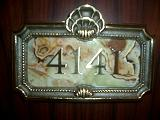

ここで、手荷物を預け、"ディズニーリゾートライン"に2日間乗り放題のモノレールチケットを受け取り、シーの2デーパスポートの購入をする。ここに預けた手荷物は"ミラコスタ"まで運ばれ、チェックイン時に受け取ることができる。食べきれなかった朝ごはん用に買ったおにぎりと共に荷物を"ミラコスタ"まで運んでもらう。"ディズニーリゾートライン"のモノレールチケットは"ミラコスタ"宿泊客は無料で貰うことができる。
"2デーパスポート"は普通のものだが、宿泊客のみが買える期間限定の"マルチデーパスポート"なるものもある。今回は、シーのみなので普通に"2デーパスポート"を購入。
"ディズニーリゾートライン"に乗って、シーに移動。10:30頃だったので入場口は混雑も無くすんなり入ることができた。開園直後に来るときは長蛇の列ができる ディズニー・ファストパス(以下"ファストパス")系のアトラクションに向け猛ダッシュだが今回は、マッタリと入り口にある巨大地球(アクアスフィア)の前 で記念撮影。アクアスフィアは水圧で浮いているのではないと思われます。
まずは、シーの雰囲気を楽しみつつ、お土産屋さんなどを回る。途中、"ロミオ・ウォッチ＆ジュエリー"でベルトや図柄を選べ、好きな文字も書き込めるオリジナル時計を注文、自分の時計に自分の誕生日名前を入れる、今後ずっと使える仕様。。。
さらに、スチームボート・ミッキーズで、気に入ったネックレスがあったので、彼女に買ってもらう。ついでにミッキーマウスのパンツも・・。
11:45頃、ちょうど通りかかったところでやっていた「 セイル・アウェイ」を遠めに観覧。このショーはゲストも参加できるらしい。船の上でゲストらしき人達が旗を振っていた。
12:00、"ミラコスタ"と一緒にに予約しておいた"リストランテ・ディ・カナレット"に行く。

プライオリティシーティングで一般客が列を作る中ささっと入店。の予定が凄く空いていた・・・。予約の優越感が全然無い(T_T) 料理の予約ではないので普通にメニューを見て料理を注文。ピザ、スパゲッティ、カルパッチョを食べた。後から知ったが、ここはピザが凄く有名らしい。食べておいて良かった・・・。
昼食後は、「アクアトピア」、「フランダーのフライングフィッシュコースター」、「スカットルのスクーター」など比較的空いているアトラクションにいくつか乗った。
そして、15:30頃、いよいよ"ミラコスタ"にチェックイン。シー内にある"ミラコスタ"への連絡口からホテルに入る。フロントでチェックインを済ませ、"ディズニーリゾート･ウェルカムセンター"に預けた荷物を受け取る。そして、部屋まで案内をしてもらう。エレベーターに乗り4階へ。「上へまいりま〜〜す♪」ミッキーだ、ミッキーがしゃべっている。。「4回にとうちゃ〜〜〜く♪」、、ミッキーだ。。ベルガール曰く「ミッキーは誰でも真似ができますよね(^_^;)」。・・・危ない危ない、危うく真似するところだった(-_-;
部屋の前まで到着、部屋番号は4141、ベルガールが「覚えやすい番号ですね。」と言うとおりわかりやすい部屋番号。後で、彼女に言われるまで自分では気がつかなかったが、部屋番号「yohichi yohichi だね。」、、なるほど(￣□￣; )!!思わずドアの部屋番号を撮影。

そして、部屋のカードキー。名前が入っていて、宿泊人数分もらえる。これは、記念に貰うことができる。
部屋に入って簡単に案内をしてもらった後は、部屋の中を物色。さまざまなディズニーオリジナルのアメニティーグッズがあった。
テレビではCSのディズニー専門チャンネルが見られるようになっていた。窓の外を見ると、予想以上に＜メディテレーニアンハーバー＞が近い。これなら「ディズニーシー・シンフォニー」がとってもよく観られそうだ。そうなのです、これのために"ポルト・パラディーゾ・サイド ハーバービュー"と言う、スウィートを除けば一番高い部屋にしたのだよ。ショーを観られると言うのが無ければ"ヴェネツィア・サイド"辺りにしていたかなあ。その差 8000円！「ディズニーシー・シンフォニー」がとっても楽しみ。
部屋でのんびりした後、プライオリティシーティングで17:00の予約をしていた"オチェーアノ"に向かう。元々は18:00の予定だったが、「ディズニーシー・シンフォニー」が18:30からと知り、1週間ほど前に時間を変更した。"オチェーアノ"ではブッフェスタイルの夕食。窓際の席でゆったりと食事をした。
18:00頃、窓の外ではだんだんとショーの席取りをする人が増えていく。僕らはマッタリと食事をして5分前に部屋に戻ればはるかに良い眺めで見られるのだよ。ふふふ〜〜ん(´ー`)と思いながら食事を続ける。・・・・・・が、18:15頃ウェイターに声を掛けられる。はぁ？？と思ってしまった。「残念ながら本日予定しておりましたディズニーシーシンフォニーは強風のため中止となりました。」、、、、、雨も降っていないし中止なんて全く考えていなかった。強風と言うほどの風も感じない。ただ、「ヴェネツィアン・ゴンドラ」も度々強風で中止していたし、海の上は風が強いらしい。彼女は信じられないらしく、「本当に中止なのかなあ?」と何度も口にしていた。消沈して4141に戻る(T_T)
うさ晴らしに「センター・オブ・ジ・アース」に乗りに行くことに。閉演の20:00までは1時間30分程あったので極自然の流れ。僕は半年前から1月31日の20:00はミラコスタの部屋にいるつもりでいたのだが・・・。
「センター・オブ・ジ・アース」の場所まで行ったところ、なんと待ち時間は30分。迷うことなく乗ることに。「センター・オブ・ジ・アース」に乗るのはこれが始めて。非常に短い待ち時間だったのだが、並んでいるうちにトイレに行きたくなった。結局、最後まで我慢したのだが、パークに戻ってくる予定は当初は無かったので夕飯の時に烏龍茶をガブガブ飲んだのだ・・・。肝心の「センター・オブ・ジ・アース」は、最後外に飛び出すところで夜景がなかなか綺麗だった。爽快感もなかなか。
その後、またも「アクアトピア」に乗って、「インディ･ジョーンズ･アドベンチャー：クリスタルスカルの魔宮」の様子を見に行くことに、待ち時間は35分だった。35分"も"待ち時間があったので、ホテルに帰りたいと言って帰る事に。半年前から20:00はホテルの部屋で過ごすつもりでいたので、ダダをこねて帰ってきた(^_^; ミラコスタ内のショップを見たいと言っていたのも却下して部屋に帰ってきた(-_-;
部屋でマッタリとしていると部屋のベルを押す音が、「ルームサービスです。」の声に彼女は「ルームサービスなんて頼んでないよね?」と警戒心爆発。いいから出てくれ、と出てもらう。「ケーキお持ちしました。」、つまり、半年前にホテルと一緒に予約しておいた誕生日プレゼント用のケーキ。だから、半年前から20:00は部屋にいる予定。もっとキャスト数人で「おめでとうございま〜〜す♪」って来てくれると思っていたら普通にルームサービスだった。でも、ポラロイド写真で写真を撮ってくれて、ミッキーからのお祝いの手紙付きだった。これは頼んだ僕も知らなかった。結構喜んでもらえたようで良かった。半年間隠し続けるのは結構疲れます(-_-; 当日は当日でどうやって20:00までに部屋に戻るか必死に考えていた･･･。僕には隠し事をするスキルは無いらしい。
その後は、"ミラコスタ"の"ミッキランジェロ・ギフトショップ"に行って買い物をして部屋に戻ってきた。「ベッラヴィスタ・ラウンジ」でカクテルでも飲もうかとも話していたが、疲れもあったしケーキも食べたのでこの日はお風呂に入って就寝。